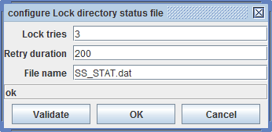

Lock directory status file

Topic content
Description
This method is required from SAP when reading HCM files. It uses a global lock file named SS_STAT.dat located in the same directory than the files to lock. If the lock file doesn't exist it will be created. A line containing the text <workfilename> <timestamp> is added to the file. Afterwards the lock file will be locked in the same way as with the method Lock file.
Configuration
To configure the method click on the button labeled with three dots.

The user may enter the name of the global lock file. By default it has the name SS_STAT.dat.
You also can configure the number of lock tries and the duration between retries. Note that the duration is given in milliseconds and that the duration is doubled each time but no longer than one minute. So in the example above, after the second try it waits 200 ms, than 800 ms and so on.